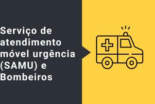
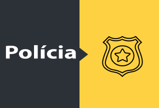

Hospital São Domingos
Avenida Jerônimo de Albuquerque, 540.
Telefone: +55 (98) 3216-8100
UDI Hospital
Avenida Professor Carlos Cunha, 2000.
Telefone: +55 (98) 3216-7979
Hospital Português
Rua do Passeio, 365 – Centro.
Telefone: +55 (98) 3231-3216
Hospital Socorrão I
Rua do Passeio, S/N – Centro.
Telefone: (+55 98) 3212-8360 / 3212-8322
Hospital Socorrão II
Rua Tancredo Neves, S/N – Jardim Lisboa – Cidade Operária.
Telefone: (+55 98) 3212-2701 / 3212-2702
Unidade De Pronto Atendimento II
(SÃO FRANCISCO)
Rua Hemetério Leitão, S/N – São Francisco 3238-5786 / 3238-5961
Unidade De Pronto Atendimento I
(COHATRAC)
Rua 09, S/N – COHATRAC
3238-5786 / 3238-5961

Hospital Socorrão I
Rua do Passeio, S/N – Centro.
Telefone: (+55 98) 3212-8360 / 3212-8322
Hospital Socorrão II
Rua Tancredo Neves, S/N – Jardim Lisboa – Cidade Operária.
Telefone: (+55 98) 3212-2701 / 3212-2702
Unidade De Pronto Atendimento II
(SÃO FRANCISCO)
Rua Hemetério Leitão, S/N – São Francisco 3238-5786 / 3238-5961
Unidade De Pronto Atendimento I
(COHATRAC)
Rua 09, S/N – COHATRAC
3238-5786 / 3238-5961

Delegacia Especial de Turismo (Detur)
Rua da Estrela, S/N – Centro Histórico.
Telefone: +55 (98) 3214-8682
Disque 100
Delegacia Especial de Turismo (Detur)
Rua da Estrela, S/N – Centro Histórico.
Telefone: +55 (98) 3214-8682
Disque 100
Disque PM (Denúncia, Informações, Orientações e Sugestões)
Telefone +55 (98) 3235-5065
Disque Denúncia (+55 98) 3223-5800 (capital) e 0300 313 5800 (interior)
Polícia Militar
Disque 190